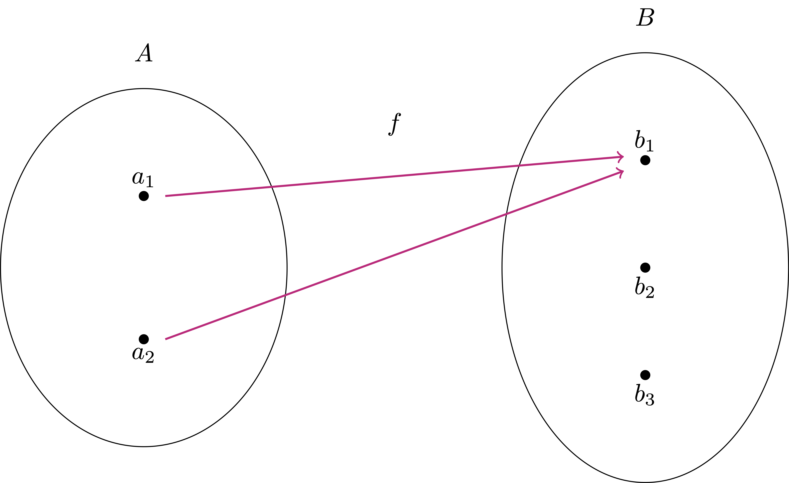
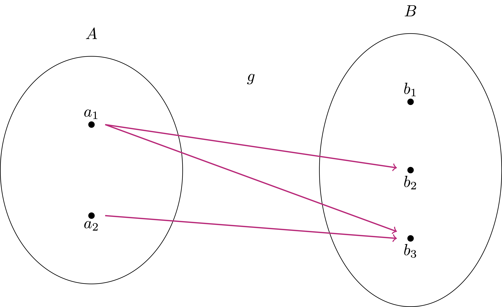
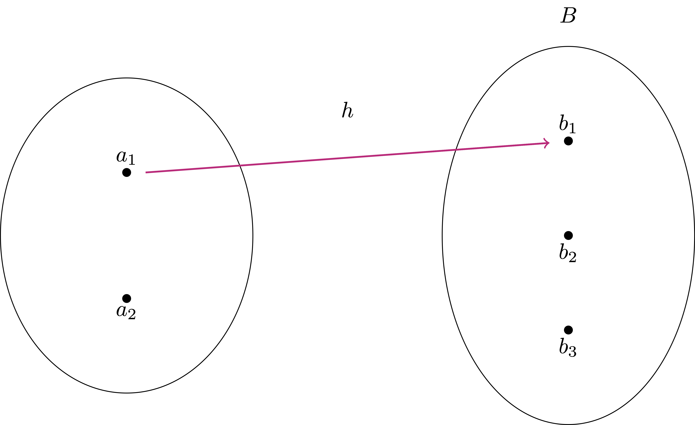
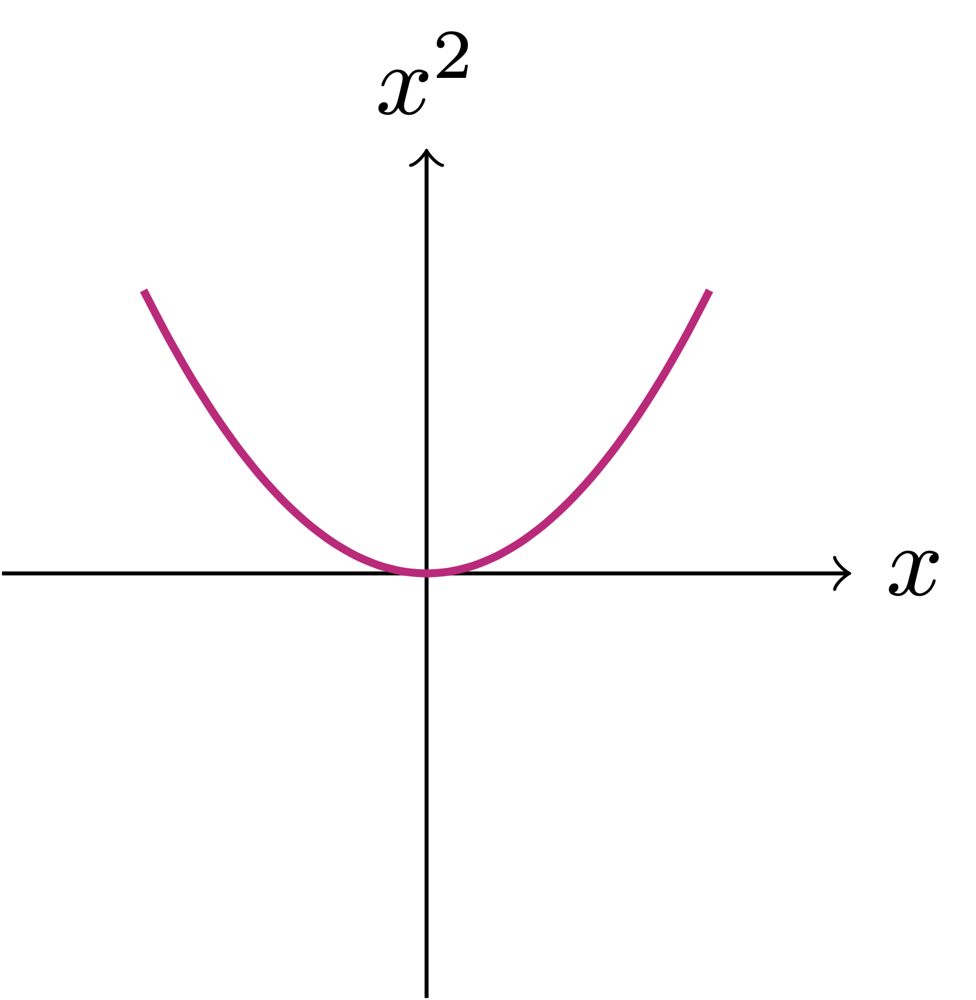
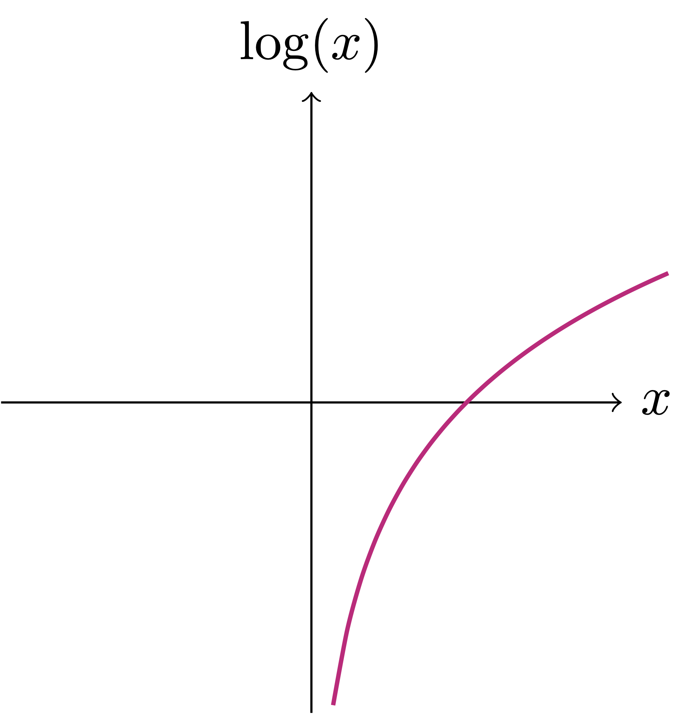
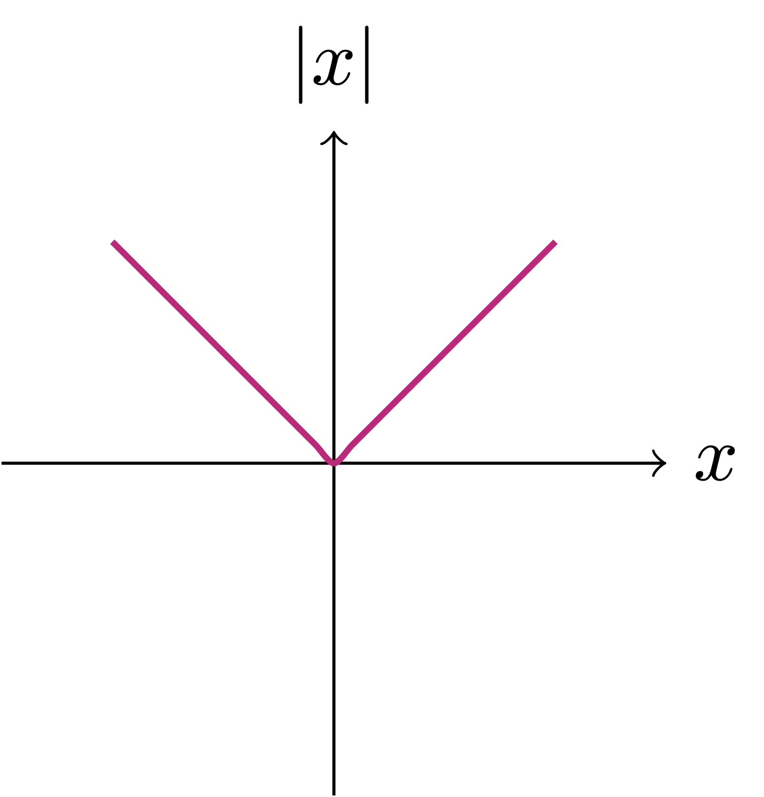

2 Preliminaries
Before introducing \(\mathbb{R}\) we want to make sure that we cover all the basics needed for the task.
2.1 Sets
A set is a collection of objects. These objects are called elements of the set. For example in the previous section we mentioned the following sets:
- \(\mathbb{N}\) the set of natural numbers
- \(\mathbb{Z}\) the set of integers
- \(\mathbb{Q}\) the set of rational numbers
- \(\mathbb{R}\) the set of real numbers
Given an arbitrary set \(A\), we write \[ x \in A \]
if the element \(x\) belongs to the set \(A\). If an element \(x\) is not contained in \(A\), we say that
\[ x \notin A \,. \]
Remark 1
\[ S = \{ \text{Alice, Olivia, Jake, Sahab} \} \]
In this case we have
\[ \text{Alice} \in S \] but instead
\[ \text{Silvio} \notin S \,. \]
2.2 Logic
In this section we introduce some basic logic symbols. Suppose that you are given two statements, say \(\alpha\) and \(\beta\). The formula \[
\alpha \implies \beta
\] means that \(\alpha\) implies \(\beta\). In other words, if \(\alpha\) is true then also \(\beta\) is true.
The formula \[
\alpha \impliedby \beta
\] means that \(\alpha\) is implied by \(\beta\): if \(\beta\) is true then also \(\alpha\) is true.
When we write \[
\alpha \iff \beta
\tag{2.1}\] we mean that \(\alpha\) and \(\beta\) are equivalent. Note that (2.1) is equivalent to \[
\alpha \implies \beta \,\, \text{ and } \,\,
\beta \implies \alpha \,.
\] Such equivalence is very useful in proofs.
Example 2
We now introduce logic quantifiers. These are
- \(\forall\) which reads for all
- \(\exists\) which reads exists
- \(\exists !\) which reads exists unique
- \(\not\exists\) which reads does not exists
These work in the following way. Suppose that you are given a statement \(\alpha(x)\) which depends on the point \(x \in \mathbb{R}\). Then we say
- \(\alpha(x)\) is satisfied for all \(x \in A\) with \(A\) some collection of numbers. This translates to the symbols \[ \alpha(x) \, \text{ is true } \, \forall \, x \in A \,, \]
- There exists some \(x\) in \(\mathbb{R}\) such that \(\alpha(x)\) is satisfied: in symbols \[ \exists \, x \in \mathbb{R}\, \text{ such that } \, \alpha(x) \, \text{ is true}, \]
- There exists a unique \(x_0\) in \(\mathbb{R}\) such that \(\alpha(x)\) is satisfied: in symbols \[ \exists ! \, x_0 \in \mathbb{R}\, \text{ such that } \, \alpha(x_0) \, \text{ is true}, \]
- \(\alpha(x)\) is never satisfied: \[ \not\exists \, x \in \mathbb{R}\, \text{ such that } \, \alpha(x) \, \text{ is true}. \]
Example 3
Let us make concrete examples:
- The expression \(x^2\) is always non-negative. Thus we can say \[ x^2 \geq 0 \,\, \text{ for all } \,\, x \in \mathbb{R}\,. \]
- The equation \(x^2=1\) has two solutions \(x=1\) and \(x=-1\). Therefore we can say \[ \exists \, x \in \mathbb{R}\, \text{such that } \, x^2 = 1 \,. \]
- The equation \(x^3=1\) has a unique solution \(x=1\). Thus \[ \exists ! \, x \in \mathbb{R}\, \text{such that } \, x^3 = 1 \,. \]
- We know that the equation \(x^2=2\) has no solutions in \(\mathbb{Q}\). Then \[ \not\exists \, x \in \mathbb{Q}\, \text{such that } \, x^2 = 2 \,. \]
2.3 Operations on sets
2.3.1 Union and intersection
For two sets \(A\) and \(B\) we define their union as the set \[ A \cup B := \{ x\, \colon \, x \in A \, \text{ or } \, x \in B \} \,. \] The intersection of \(A\) and \(B\) is defined by \[ A \cap B := \{ x\, \colon \, x \in A \, \text{ and } \, x \in B \} \,. \] We denote the empty set by the symbol \(\emptyset\). Two sets are disjoint if \[ A \cap B = \emptyset \,. \]
Example 4
\[\begin{align} E & := \{ 2n \, \colon \, n \in \mathbb{N}\} \,,\\ O & := \{ 2n+1 \, \colon \, n \in \mathbb{N}\} \,. \end{align}\]
Then we have
\[\begin{align} \mathbb{N}\cap E & = E \,, \,\, \mathbb{N}\cap O = O \,, \\ O \cup E & = \mathbb{N}\,, \,\, O \cap D = \emptyset \,. \end{align}\]
2.3.2 Inclusion and equality
Given two sets \(A\) and \(B\), we say that \(A\) is contained in \(B\) if all the elements of \(A\) are also contained in \(B\). This will be denoted with the inclusion symbol \(\subseteq\), that is, \[ A \subseteq B \,. \] In this case we say that
- \(A\) is a subset of \(B\),
- \(B\) is a superset of \(A\).
The inclusion \(A \subseteq B\) is equivalent to the implication: \[ x \in A \,\, \implies \,\, x \in B \] for all \(x \in A\). The symbol \(\implies\) reads implies, and denotes the fact that the first condition implies the second.
Example 5
We say that two sets \(A\) and \(B\) are equal if they contain the same elements. We denote equality by the symbol \[ A=B \,. \] If \(A \subseteq B\) and \(A \neq B\), we write \[ A \subset B \quad \mbox{ or } \quad A \subsetneq B \,. \]
Example 6
The sets \[ A =\{ 1,2,3 \} \,, \quad B= \{ 3 ,1,2\} \] are equal, that is \(A=B\). This is because they contain exactly the same elements: order does not matter when talking about sets.
Consider the sets \[ A =\{ 1,2 \} \,, \quad B = \{ 1, 2 ,5 \} \,. \] Then \(A\) is contained in \(B\), but \(A\) is not equal to \(B\). Therefore we write \(A \subset B\) or \(A \subsetneq B\).
Proposition 7
Proof
The proof is almost trivial. However it is a good exercise in basic logic, so let us do it.
First implication \(\implies\):
Suppose that \(A=B\). Let us show that \(A\subseteq B\). Since \(A = B\), this means that all the elements of \(A\) are also contained in \(B\). Therefore if we take \(x \in A\) we have \[ x \in A \,\, \implies \,\, x \in B \,. \] This shows \(A \subseteq B\). The proof of \(B \subseteq A\) is similar.Second implication \(\impliedby\):
Suppose that \(A \subseteq B\) and \(B \subseteq A\). We need to show \(A=B\), that is, \(A\) and \(B\) have the same elements. To this end let \(x \in A\). Since \(A \subseteq B\) then we have \(x \in B\). Thus \(B\) contains all the elements of \(A\). Since we are also assuming \(B \subseteq A\), this means that \(A\) contains all the elements of \(B\). Hence \(A\) and \(B\) contain the same elements, and \(A=B\).
The above proposition is very useful when we need to prove that two sets are equal: rather than showing directly that \(A = B\), we can prove that \(A \subseteq B\) and \(B \subseteq A\).
2.3.3 Infinite unions and intersections
Suppose given a set \(\Omega\), and a family of sets \(A_n \subseteq \Omega\), where \(n \in \mathbb{N}\). Then we can define the infinte union \[ \bigcup_{n \in \mathbb{N}} A_n := \{ x \in \Omega \, \colon \, x \in A_n \,\, \text{ for at least one } \,\, n \in \mathbb{N}\} \,. \] The infinte intersection is defined as \[ \bigcap_{n \in \mathbb{N}} A_n := \{ x \in \Omega \, \colon \, x \in A_n \,\, \text{ for all } \,\, n \in \mathbb{N}\} \,. \]
Example 8
We also have that \[ \bigcap_{n \in \mathbb{N}} A_n = \emptyset \,. \tag{2.3}\] We prove the above by contradiction. Indeed, suppose that (2.3) is false, i.e., \[ \bigcap_{n \in \mathbb{N}} A_n \neq \emptyset \,. \] This means there exists some \(m \in \mathbb{N}\) such that \(m \in \cap_{n \in \mathbb{N}} A_n\). Hence, by definition, \(m \in A_n\) for all \(n \in \mathbb{N}\). However \(m \notin A_{m+1}\), yielding a contradiction. Thus (2.3) holds.
2.3.4 Complement
Suppose that \(A\) and \(B\) are subsets of a larger set \(\Omega\). The complement of \(A\) with respect to \(B\) is the set of elements of \(B\) which do not belong to \(A\), that is \[ B \smallsetminus A := \{ x \in \Omega \, \colon \, x \in B \, \text{ and } \, x \notin A \} \,. \] In particular, the complement of \(A\) with respect to \(\Omega\) is denoted by \[ A^c := \Omega \smallsetminus A := \{ x \in \Omega \, \colon \, x \notin A \} \,. \]
Remark 9
Example 10
Suppose \(A, B \subseteq \Omega\). Then \[ A \subseteq B \iff B^c \subseteq A^c \,. \]
Let us prove the above claim:
First implication \(\implies\):
Suppose that \(A \subseteq B\). We need to show that \(B^c \subseteq A^c\). Hence, assume \(x \in B^c\). By definition this means that \(x \notin B\). Now notice that we cannot have that \(x \in A\). Indeed, assume \(x \in A\). By assumption we have \(A \subseteq B\), hence \(x \in B\). But we had assumed \(x \in B\), contradiction. Therefore it must be that \(x \notin A\). Thus \(B^c \subseteq A^c\).Second implication \(\impliedby\):
Essentially the same proof, hence we omit it.
We conclude by stating the De Morgan’s Laws. The proof will be left as an exercise.
Proposition 11: De Morgan’s Laws
2.3.5 Power set
Let \(\Omega\) be an arbitray set. We define the power set of \(\Omega\) as \[ \mathcal{P}(\Omega) := \{ A \, \colon \,A \subseteq \Omega \}\,, \] that is, the power set of \(\Omega\) is the set of all subsets of \(\Omega\).
Remark 12
It holds that:
\(\mathcal{P}(\Omega)\) is always non-empty, since we have that \[ \emptyset \in \mathcal{P}(\Omega) \,, \quad \Omega \in \mathcal{P}(\Omega) \,. \]
Given \(A, B \in \mathcal{P}(\Omega)\), then the sets \[ A \cup B, \quad A \cap B ,\quad A^c , \quad B \smallsetminus A \] are all elements of \(\mathcal{P}(\Omega)\).
Suppose \(\Omega\) is discrete and finite, that is, \[ \Omega = \{x_1, \ldots, x_m\} \] for some \(m \in \mathbb{N}\). Then \(\mathcal{P}(\Omega)\) contains \(2^m\) elements.
Indeed, suppose that we want to define a subset \(A \subset \Omega\). Then for each element \(x_i \in \Omega\) there are two choices: either we include \(x_i \in A\), or we do not include \(x_i \in A\). Therefore there are \[ \underbrace{2 \cdot 2 \cdot \ldots \cdot 2 }_{m \, \text{times}} = 2^m \] ways of constructing \(A\). It follows that \(\Omega\) possesses exactly \(2^m\) subsets, so that \(\mathcal{P}(\Omega)\) contains \(2^m\) elements.
Example 13
- \(\emptyset\)
- \(\{x\}\)
- \(\{y\}\)
- \(\{z\}\)
- \(\{x,y\}\)
- \(\{x,z\}\)
- \(\{y,z\}\)
- \(\{x,y,z\}\)
We therefore write \[\begin{align} \mathcal{P}(\Omega) = \{ \emptyset, & \, \{x\} , \, \{y\} , \, \{z\} , \{x,y\} \\ & \{x,z\}, \, \{y,z\} , \, \{x,y,z\} \} \,. \end{align}\]
2.3.6 Product of sets
Suppose \(A\) and \(B\) are two sets. The product of \(A\) and \(B\) is the set of pairs \[ A \times B := \{ (a,b) \, \colon \, a \in A, \, b \in B \} \,. \] By definition two elements in \(A \times B\) are the same, in symbols \[ (a, b) = (\tilde{a}, \tilde{b}) \] if and only if they are equal component-by-componenent, that is \[ a=\tilde{a}\,, \qquad b = \tilde{b} \,. \]
2.4 Equivalence relation
Suppose \(A\) is a set. A binary relation \(R\) on \(A\) is a subset \[ R \subseteq A \times A \,. \]
Definition 14: Equivalence relation
A binary relation \(R\) is called an equivalence relation if it satisfies the following properties:
Reflexive: For each \(x \in A\) one has \[ (x,x) \in R \,, \]
This is saying that all the elements in \(A\) must be related to themselves
Symmetric: We have \[ (x,y) \in R \implies (y,x) \in R \]
If \(x\) is related to \(y\), then \(y\) is related to \(x\)
Transitive: We have \[ (x,y) \in R \,, \,\, (y,z) \in R \implies (x,z) \in R \]
If \(x\) is related to \(y\), and \(y\) is related to \(z\), then \(x\) must be related to \(z\)
Notation 15
Definition 16: Equivalence classes
In order for the definition of \([x]\) to be well-posed we need to check that:
- \([x]\) is non-empty.
- \([x]\) does not depend on the representative \(x\): we need to check that \[ x \sim y \quad \iff \quad [x] = [y] \]
This is shown in the following proposition.
Proposition 17
Let \(\sim\) be an equivalence relation on \(A\). Then
For each \(x \in A\) we have \[ [x] \neq \emptyset \]
For all \(x,y \in A\) it holds \[ x \sim y \quad \iff \quad [x] = [y] \,. \]
Proof
Proof of Point 2: We need to prove a double implication. It is convenient to divide the proof into two parts.
Part 1: \(\,\, x \sim y \implies [x] = [y]\).
Assume \(x \sim y\). By the definition of an equivalence class \[ [x] = \{z \in A \mid z \sim x\} \] is the set of all elements in \(A\) that are related to \(x\). Similarly, \[ [y] = \{z \in A \mid z \sim y \} \,. \] We need to show that \[ [x] = [y] \,, \] meaning that every element in \([x]\) is also in \([y]\), and vice versa.
- First, take an arbitrary element \(z \in [x]\).
- By definition, \(z \sim x\).
- Since \(\sim\) is an equivalence relation, it satisfies the transitive property.
- Therefore, from \(z \sim x\) and \(x \sim y\), we can conclude that \(z \sim y\)
- Hence, \(z \in [y]\).
- This shows that \([x] \subseteq [y]\).
- Now, take an arbitrary element \(z \in [y]\).
- By definition, \(z \sim y\).
- Since \(\sim\) is an equivalence relation, it satisfies the symmetric property.
- Therefore, from \(x \sim y\), we also have \(y \sim x\).
- By the transitive property, from \(z \sim y\) and \(y \sim x\), we can conclude that \(z \sim x\).
- Hence, \(z \in [x]\).
- This shows that \([y] \subseteq [x]\).
Since \([x] \subseteq [y]\) and \([y] \subseteq [x]\), it follows that \([x] = [y]\), as required. Thus, we have shown that \(x \sim y \implies [x] = [y]\).
Part 2: \(\,\, [x] = [y] \implies x \sim y\).
Assume \([x] = [y]\). This means that the equivalence classes of \(x\) and \(y\) are the same.
- By point (i) in the Proposition, we have \(x \in [x]\) and \(y \in [y]\).
- Since \([x] = [y]\), we have \(x \in [y]\).
- By the definition of \([y]\), this means \(x \sim y\).
Thus, we have shown that \([x] = [y] \implies x \sim y\).
Conclusion: Since we have proven both directions:
- \(x \sim y \implies [x] = [y]\)
- \([x] = [y] \implies x \sim y\)
we conclude that \[ x \sim y \iff [x] = [y] \,. \] This completes the proof.
The prototypical (and trivial) example of equivalence relation is the equality over \(\mathbb{Q}\).
Example 18: Equality is an equivalence relation
Reflexive: It holds, since \(x=x\) for all \(x \in \mathbb{Q}\),
Symmetric: Again \(x = y\) if and only if \(y = x\),
Transitive: If \(x = y\) and \(y = z\) then \(x = z\).
The class of equivalence of \(x \in \mathbb{Q}\) is given by \[ [x] = \{ x \}\,, \] that is, this relation is quite trivial, given that each element of \(\mathbb{Q}\) can only be related to itself. The quotient space is then \[ \mathbb{Q}/ R = \{ [x] \, \colon \,x \in \mathbb{Q}\} = \{ \{ x\} \, \colon \,x \in \mathbb{Q}\} \,. \]
We now give an example of a non-trivial equivalence relation over \(\mathbb{Q}\).
Example 19
We claim that \(R\) is an equivalence relation on \(\mathbb{Q}\). Indeed:
- Reflexive: Let \(x \in \mathbb{Q}\). Then \(x-x = 0\) and \(0 \in \mathbb{Z}\). Thus \(x \sim x\).
- Symmetric: If \(x \sim y\) then \(x-y \in \mathbb{Z}\). But then also
\[ -(x-y) = y - x \in \mathbb{Z} \] and so \(y \sim x\). - Transitive: Suppose \(x \sim y\) and \(y \sim z\). Then \[ x - y \in \mathbb{Z}\, \text{ and } \, y - z \in \mathbb{Z}\,. \] Thus we have \[ x-z = (x-y) + (y-z) \in \mathbb{Z} \] showing that \(x \sim z\).
We have shown that \(R\) is an equivalence relation on \(\mathbb{Q}\).
Question: Can we characterize the equivalence class \([x]\)?
Yes. Note that \[ y -x \in \mathbb{Z} \] is equivalent to \[ \exists \, n \in \mathbb{Z}\, \text{ s.t. } \, y - x = n \] which again is equivalent to \[ \exists \, n \in \mathbb{Z}\, \text{ s.t. } \, y = x + n \,. \] In summary we have \[ x \sim y \quad \iff \quad \exists \, n \in \mathbb{Z}\, \text{ s.t. } \, y = x + n \,. \] Therefore the equivalence classes with respect to \(\sim\) are \[ [x] = \{ x + n \ \colon \ n \in \mathbb{Z}\} \,. \] Each equivalence class has exactly one element in \([0,1) \cap \mathbb{Q}\), meaning that: \[ \forall x \in \mathbb{Q}\,, \,\, \exists! \, q \in \mathbb{Q}\, \text{ s.t. } \, 0 \leq q < 1 \, \text{ and } \, q \in [x]\,. \tag{2.4}\] Condition (2.4) is illustrated in Figure 2.1. Indeed: take \(x \in \mathbb{Q}\) arbitrary. Then \(x \in [n,n+1)\) for some \(n \in \mathbb{Z}\). Setting \(q:=x-n\) we obtain that \[ x = q + n \,, \qquad q \in [0,1) \,, \] proving (2.4). In particular (2.4) implies that for each \(x \in \mathbb{Q}\) there exists \(q \in [0,1) \cap \mathbb{Q}\) such that \[ [x] = [q] \,. \] This allows to conclude that \[ \mathbb{Q}/ R = \{ [x] \, \colon \,x \in \mathbb{Q}\} = \{ q \in \mathbb{Q}\, \colon \,0 \leq q <1 \} \,. \]
2.5 Order relation
Order relations are defined similarly to equivalence relations. However notice that symmetry is replaced by antisymmetry.
Definition 20: Partial order
A binary relation \(R\) on \(A\) is called a partial order if it satisfies the following properties:
Reflexive: For each \(x \in A\) one has \[ (x,x) \in R \,, \]
Antisymmetric: We have \[ (x,y) \in R \, \text{ and } \, (y,x) \in R \implies x = y \]
This is the only new condition with respect to the definition of equivalence relation, and it replaces symmetry.
Transitive: We have \[ (x,y) \in R \,, \,\, (y,z) \in R \implies (x,z) \in R \]
Definition 21: Total order
A binary relation \(R\) on \(A\) is called a total order relation if it satisfies the following properties:
Partial order: \(R\) is a partial order on \(A\).
Total: For each \(x,y \in A\) we have \[ (x, y) \in R \,\, \mbox{ or } \,\, (y,x) \in R \,. \]
This is saying that all elements in \(A\) are related.
The operation of set inclusion is a partial order on \(P(\Omega)\) but not a total order.
Example 22: Set inclusion is a partial order but not total order
Reflexive: It holds, since \(A \subseteq A\) for all \(A \in \mathcal{P}(\Omega)\),
Transitive: If \(A \subseteq B\) and \(B \subseteq C\), then by definition of inclusion \(A \subseteq C\).
Antisymmetric: If \(A \subseteq B\) and \(B \subseteq A\), then \(A=B\) by Proposition 7.
Therefore \(R\) is a partial order on \(\mathcal{P}(\Omega)\).
In general \(R\) is not a total order. For example if we consider \[ \Omega = \{x, y\}\,. \] Thus \[ \mathcal{P}(\Omega) = \{ \emptyset , \, \{x\} , \, \{y\} , \, \{x,y\} \}\,. \] If we pick \(A=\{x\}\) and \(B=\{y\}\) then \(A \cap B = \emptyset\), meaning that \[ A \not\subseteq B \,, \quad B \not\subseteq A \,, \] showing that \(R\) is not a total order.
The inequality on \(\mathbb{Q}\) is an example of total order.
Example 23: Inequality is a total order
Reflexive: It holds, since \(x \leq x\) for all \(x \in \mathbb{Q}\),
Transitive: If \(x \leq y\) and \(y \leq z\) then \(x \leq z\).
Antisymmetric: If \(x \leq y\) and \(y \leq x\) then \(x = y\).
Finally, we halso have that \(R\) is a total order on \(\mathbb{Q}\), since for all \(x,y \in \mathbb{Q}\) we have \[ x \leq y \,\, \text{ or } \,\, y \leq x \,. \]
Notation 24
2.6 Intervals
In this section we assume to have available the set \(\mathbb{R}\) of real numbers, which we recall is an extension of \(\mathbb{Q}\). We now introduce the concept of interval.
Definition 25
In general we also define the intervals \[\begin{align} [a,b) & := \{ x \in \mathbb{R}\, \colon \, a \leq x < b \}\,, \\ (a,b] & := \{ x \in \mathbb{R}\, \colon \, a \leq x \leq b \}\,, \\ (a, \infty) & := \{ x \in \mathbb{R}\, \colon \, x > a \}\,, \\ [a, \infty) & := \{ x \in \mathbb{R}\, \colon \, x \geq a \}\,, \\ (-\infty, b) & := \{ x \in \mathbb{R}\, \colon \, x < b \}\,, \\ (-\infty, b] & := \{ x \in \mathbb{R}\, \colon \, x \leq b \}\,. \end{align}\]
Some of the above intervals are depicted in Figure 2.2, Figure 2.3, Figure 2.4, Figure 2.5 below.
2.7 Functions
Definition 26: Functions
Let \(A\) and \(B\) be sets. A function from \(A\) to \(B\) is a rule which associates at each element \(x \in A\) a single element \(y \in B\). Notations:
- We write \[ f \ \colon A \to B \] to indicate such rule,
- For \(x \in A\), we denote by \[ y:=f(x) \in B \] the element associated with \(x\) by \(f\).
- We will often denote the map \(f\) also by \[ x \mapsto f(x) \,. \]
In addition:
- The set \(A\) is called the domain of \(f\),
- The range or image of \(f\) is the set \[ f(A) := \{ y \in B \, \colon \,y = f(x) \, \mbox{ for some }\, x \in A \} \subseteq B \,. \]
Warning
We want to stress the importance of the first two sentences in Definition 26. Assume that \(f \colon A \to B\) is a function. Then:
- To each element \(x \in A\) we can only associate one element \(f(x) \in B\),
- Every element \(x \in A\) has to be associated to an element \(f(x) \in B\).
Example 27
Assume given the two sets \[ A = \{ a_1,a_2 \} \,, \quad B=\{b_1,b_2,b_3\} \,. \] Let us see a few examples:
Define \(f \ \colon A \to B\) by setting \[ f(a_1) = b_1 \,, \quad f(a_2) = b_1 \,. \] In this way \(f\) is a function, with domain \(A\) and range \[ f(A) = \{ b_1 \} \subseteq B \,. \]
Define \(g \ \colon A \to B\) by setting \[ g(a_1) = b_2 \,, \quad g(a_1) = b_3 \,, \quad g(a_2) = b_3 \] Then \(g\) is NOT a function, since the element \(a_1\) has two elements associated.
Define \(h \ \colon A \to B\) by setting \[ h(a_1) = b_1 \,. \] Then \(g\) is NOT a function, since the element \(a_2\) has no element associated.



Example 28
Let us make two examples of functions on \(\mathbb{R}\):
Define \(f \ \colon \mathbb{R}\to \mathbb{R}\) by \[ f(x)=x^2 \,. \] Note that the domain of \(f\) is given by \(\mathbb{R}\), while the range is \[ f(\mathbb{R}) = [0,\infty)\,. \]
Define \(g \ \colon \mathbb{R}\to \mathbb{R}\) as the logarithm: \[ g(x) = \log (x) \,. \] This time the domain is \((0,\infty)\), while the range is \(g(\mathbb{R})=\mathbb{R}\).


2.8 Absolute value or Modulus
In this section we assume to have available the set \(\mathbb{R}\) of real numbers, which we recall is an extension of \(\mathbb{Q}\).
Definition 29: Absolute value
Example 30
Let us also make the following basic Remark. The proof will be left as an exercise.
Remark 31
Another basic remark (proof by exercise).
Remark 32
We can use the definition of absolute value to define the absolute value function. This is the function \[ f \ \colon \mathbb{R}\to \mathbb{R}\,, \quad f(x):=|x| \,. \] You might be familiar with the graph associated to \(f\), as seen below.

It is also useful to understand the absolute value in a geometric way.
Remark 33: Geometric interpretation of \(|x|\)
Remark 34: Geometric interpretation of \(|x-y|\)
In the next Lemma we show a fundamental equivalence regarding the absolute value.
Lemma 35
The geometric meaning of the above statement is clear: the distance of \(x\) from the origin is less than \(y\), in formulae \[ |x| \leq y\,, \] if and only if \(x\) belongs to the interval \([-y,y]\), in formulae \[ -y \leq x \leq y \,. \] A sketch of this explanation is seen in Figure 2.8 below.
Proof: Proof of Lemma 35
Step 1: First implication.
Suppose first that \[
|x| \leq y \,.
\tag{2.5}\] Recalling that the absolute value is non-negative, from (2.5) we deduce that \(0 \leq |x| \leq y\). In particular it holds \[
y \geq 0 \,.
\tag{2.6}\] We make separate arguments for the cases \(x \geq 0\) and \(x<0\):
- Case 1: \(x \geq 0\). From (2.5), (2.6) and from \(x \geq 0\) we have \[ -y \leq 0 \leq x = |x| \leq y \] which shows \[ -y \leq x \leq y \,. \]
- Case 2: \(x < 0\). From (2.5), (2.6) and from \(x < 0\) we have \[ -y \leq 0 < - x = |x| \leq y \] which shows \[ -y \leq - x \leq y \,. \] Multiplying the above inequalities by \(-1\) yields \[ -y \leq x \leq y \,. \]
Step 2: Second implication.
Suppose now that
\[
-y \leq x \leq y \,.
\tag{2.7}\] We make separate arguments for the cases \(x \geq 0\) and \(x<0\):
With the same arguments, just replacing \(\leq\) with \(<\), one can also show the following.
Corollary 36
2.9 Triangle inequality
The triangle inequality relates the absolute value to the sum operation. It is a very important inequality, which we will use a lot in the future.
Theorem 37: Triangle inequality
Before proceeding with the proof, let us discuss the geometric meaning of the triangle inequality.
Remark 38: Geometric meaning of triangle inequality
Using the rule of sum of vectors, we can draw \(x+y\), as shown in Figure 2.10 below. From the picture it is evident that \[ |x+y| \leq |x| + |y|\,, \tag{2.9}\] that is, the length of each side of a triangle does not exceed the sum of the lengths of the two remaining sides. Note that (2.9) is exactly the second inequality in (2.8). This is why (2.8) is called triangle inequality.
Proof: Proof of Theorem 37
Step 1. Proof of the second inequality in (2.8).
Trivially we have \[
|x| \leq |x| \,.
\] Therefore we can apply Lemma 35 and infer \[
-|x| \leq x \leq |x| \,.
\tag{2.10}\] Similarly we have that \(|y| \leq |y|\), and so Lemma 35 implies \[
-|y| \leq y \leq |y| \,.
\tag{2.11}\] Summing (2.10) and (2.11) we get \[
-(|x| + |y|) \leq x + y \leq |x| + |y| \,.
\] We can now again apply Lemma 35 to get \[
|x + y| \leq |x| + |y| \,,
\tag{2.12}\] which is the second inequality in (2.8).
Step 2. Proof of the first inequality in (2.8).
Note that the trivial identity \[
x = x+y - y
\] always holds. We then have \[\begin{align}
|x| & = |x+y - y| \\
& = |(x+y) + (-y)| \\
& = |a+b|
\end{align}\] with \(a=x+y\) and \(b=-y\). We can now apply (2.12) to \(a\) and \(b\) to obtain \[\begin{align}
|x| & = |a+b| \\
& \leq |a| + |b| \\
& = |x+y| + |-y| \\
& = |x+y| + |y|
\end{align}\] Therefore \[
|x| - |y| \leq |x+y| \,.
\tag{2.13}\] We can now swap \(x\) and \(y\) in (2.13) to get \[
|y| - |x| \leq |x+y| \,.
\] By rearranging the above inequality we obtain \[
-|x+y| \leq |x| - |y| \,.
\tag{2.14}\] Putting together (2.13) and (2.14) yields \[
-|x+y| \leq |x| - |y| \leq |x+y| \,.
\] By Lemma 35 the above is equivalent to \[
||x| - |y|| \leq |x+y| \,,
\] which is the first inequality in (2.8).
An immediate consequence of the triangle inequality are the following inequalities, which are left as an exercise.
Remark 39
Notice that the inequality in (2.15) differs from the triangle inequality (2.8) by a sign. Indeed it can be shown tha (2.8) and (2.15) are equivalent.
2.10 Proofs in Mathematics
In a mathematical proof one needs to show that \[ \alpha \implies \beta \tag{2.16}\] where
- \(\alpha\) is a given set of assumptions, or Hypothesis
- \(\beta\) is a conclusion, or Thesis
Proving (2.16) means convincing ourselves that \(\beta\) follows from \(\alpha\). Common strategies to prove (2.16) are:
Contradiction: Assume that the thesis is false, and hope to reach a contradiction: that is, prove that \[ \neg \beta \implies \, \mbox{ contradiction} \] where \(\neg \beta\) is the negation of \(\beta\).
For example we already proved by contradiction that \[ \mbox{Definition of } \mathbb{Q}\, \implies \, \sqrt{2} \notin \mathbb{Q}\,, \] In the above statement \[ \alpha = \left( \mbox{Definition of } \mathbb{Q}\right) \,. \] \[ \beta = \left( \sqrt{2} \notin \mathbb{Q}\right) \,. \] Therefore \[ \neg \beta = \left( \sqrt{2} \in \mathbb{Q}\right) \,. \]
Direct: Sometimes proofs will also need direct arguments, meaning that one need to show directly that (2.16) holds.
Contrapositive: The statement (2.16) is equivalent to \[ \neg \beta \, \implies \, \neg \alpha \,. \tag{2.17}\] Thus, instead of proving (2.16), one could show (2.17). The statement (2.17) is called the contrapositive of (2.16).
Let us make an example.
Proposition 40
Before proceeding with the proof, note that the above stetement is just saying that:
Two numbers are equal if and only if they are arbitrarily close
By arbitrarily close we mean that they are as close as you want the to be.
Proof: of Proposition 40
Let \(a, b \in \mathbb{R}\). Then it holds: \[ a=b \, \iff \, |a-b| < \varepsilon\,, \,\, \forall \, \varepsilon>0 \,. \]
Setting \[\begin{align} \alpha & = \left( a=b \right) \\ \beta & = \left( |a-b| < \varepsilon\,, \,\, \forall \, \varepsilon>0 \right) \end{align}\] the statement is equivalent to \[ \alpha \iff \beta \,. \] To show the above, it is sufficient to show that \[ \alpha \implies \beta \quad \mbox{ and } \quad \beta \implies \alpha \,. \]
Step 1. Proof that \(\alpha \implies \beta\).
This proof can be carried out by a direct argument. Since we are assuming \(\alpha\), this means \[
a=b \,.
\] We want to see that \(\beta\) holds. Therefore fix an arbitrary \(\varepsilon>0\). This means that \(\varepsilon\) can be any positive number, as long as you fix it. Clearly \[
|a-b| = |0| = 0 < \varepsilon
\] since \(a=b\), \(|0|=0\), and \(\varepsilon>0\). The above shows that \[
|a-b| < \varepsilon\,.
\] As \(\varepsilon>0\) was arbitrary, we have just proven that \[
|a-b| < \varepsilon\,, \,\, \forall \, \varepsilon>0 \,,
\] meaning that \(\beta\) holds and the proof is concluded.
Step 2. Proof that \(\beta \implies \alpha\).
Let us prove this implication by showing the contrapositive \[
\neg \alpha \implies \neg\beta \,.
\] So let us assume \(\neg \alpha\) is true. This means that \[
a \neq b \,.
\] We have to see that \(\neg \beta\) holds. But \(\neg \beta\) means that \[
\exists \, \varepsilon_0> 0 \, \text{ s.t. } \, |a-b| \geq \varepsilon_0 \,.
\] The above is satisfied by choosing \[
\varepsilon_0 := |a-b| \,,
\] since \(\varepsilon_0 >0\) given that \(a \neq b\).
2.11 Induction
Another technique for carrying out proofs is induction, which we take as an axiom.
Axiom 41: Principle of Induction
- We have \(1 \in S\), and
- Whenever \(n \in S\), then \((n+1) \in S\).
Then we have \[ S=\mathbb{N}\,. \]
Important
Remark 42
However, in justifying basic principles of mathematics, one at some point needs to draw a line. This means that something which looks elementary needs to be assumed to hold, in order to have a starting point for proving deeper statements.
In the case of the Principle of Induction, the intuition is clear:
The Principle of Induction is just describing the domino effect: If one tile falls, then the next one will fall as well. Therefore if the first tile falls, all the tiles will fall.
It seems reasonable to assume such evident principle.
The Principle of Induction can be used to prove statements which depend on some index \(n \in \mathbb{N}\). Precisely, the following statement holds.
Corollary 43: Principle of Inducion - Alternative formulation
- \(\alpha(1)\) is true, and
- Whenever \(\alpha(n)\) is true, then \(\alpha(n+1)\) is true.
Then \(\alpha(n)\) is true for all \(n \in \mathbb{N}\).
Proof
- We have \(1 \in S\), since \(\alpha(1)\) is true.
- If \(n \in S\) then \(\alpha(n)\) is true. By assumption this implies that \(\alpha(n+1)\) is true. Therefore \((n+1) \in S\).
Therefore \(S\) satisfies the assumptions of the Induction Principle and we conclude that \[ S=\mathbb{N}\,. \] By definition this means that \(\alpha(n)\) is true for all \(n \in \mathbb{N}\).
Example 44: Formula for summing first \(n\) natural numbers
Proof. To be really precise, consider the statement \[ \alpha(n) := \, \mbox{the above formula is true for } \, n \,. \] In order to apply induction, we need to show that
- \(\alpha(1)\) is true,
- If \(\alpha(n)\) is true then \(\alpha(n+1)\) is true.
Let us proceed:
- It is immediate to check that (2.18) holds for \(n=1\).
- Suppose (2.18) holds for \(n = k\). Then \[\begin{align} 1 + \ldots + k + (k+1) & = \frac{k(k+1)}{2} + (k+1) \\ & = \frac{ k(k+1) + 2(k+1) }{2} \\ & = \frac{(k+1)(k+2)}{k} \end{align}\] where in the first equality we used that (2.18) holds for \(n=k\). We then have \[ 1 + \ldots + k + (k+1) = \frac{(k+1)(k+2)}{k}\,, \] which shows that (2.18) holds for \(n = k+1\).
By the Principle of Induction we then conclude that \(\alpha(n)\) is true for all \(n \in \mathbb{N}\), which means that (2.18) holds for all \(n \in \mathbb{N}\).
Example 45: Statements about sequences of numbers
Let us compute the first 4 elements: \[\begin{align} x_1 & = 1 \\ x_2 & = \frac{x_1}{2} + 1 = 1 + \frac12 = x_1 + \frac{1}{2} \\ x_3 & = \frac{x_2}{2} + 1 = 1 + \frac12 + \frac{1}{4} = x_2 + \frac{1}{4} \\ x_4 & = \frac{x_3}{2} + 1 = 1 + \frac12 + \frac{1}{4} + \frac{1}{8} = x_3 + \frac{1}{8}\\ \end{align}\] We see a pattern: The successive term is obtained by adding a power of \(1/2\) to the previous term. We therefore conjecture that \[ x_{n+1} = x_n + \frac{1}{2^n} \tag{2.19}\]
We want to prove our conjecture rigorously, i.e. using induction.
Claim. (2.19) holds for all \(n \in \mathbb{N}\).
Proof of Claim. We argue by induction:
We see that \[ x_2 = 1 + \frac{1}{2} = x_1 + \frac{1}{2} \] proving (2.19) for \(n = 1\).
Suppose now that (2.19) holds for \(n=k\). We need to prove that (2.19) holds for \(n=k+1\), that is, \[ x_{k+2} = x_{k+1} + \frac{1}{2^{k+1}} \,. \tag{2.20}\] Starting with the definition of \(x_{k+2}\) we see that \[\begin{align*} x_{k+2} & = \frac{x_{k+1}}{2} + 1 & (\text{definition of } x_{k+2} ) \\ & = \frac{x_k + \frac{1}{2^k}}{2} + 1 & (\text{inductive hypothesis} ) \\ & = \frac{x_k}{2} + 1 + \frac{1}{2^{k+1}} & (\text{just calculations} ) \\ & = x_{k+1} + \frac{1}{2^{k+1}} & (\text{definition of } x_{k+1} ) \\ \end{align*}\] which proves (2.20).
Therefore the assumptions of the Induction Principle are satisfied, and (2.19) follows.